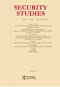

收录于合集 #理论研究 96个

简 介
** 【作者】** 乔纳森•科什纳(Jonathan Kirshner),波士顿学院(Boston College)政治科学与国际关系学教授。他的研究领域包括：国际关系，政治经济学（宏观经济学与货币），政治和电影。目前他的研究课题为：后金融危机时代的国际关系与古典现实主义。最近出版著作有《金融危机后的美国》( American Power after the Financial Crisis )。
** **【 编译 】****虞敷扬（乔治·华盛顿大学）
** **【 校对 】****胡贺 缪高意
** **【 审核 】****兰星辰
** 【来源】** Kirshner, Jonathan. “Handle Him with Care: The Importance of Getting Thucydides Right”, Security Studies ,Vol. 28, No. 1, Routledge, Jan. 2019, pp. 1–24.
** 【期刊】** 《安全研究》收录出版创新性的学术稿件——无论是理论研究、实践经验分享还是两者兼而有之。安全研究包含广泛的议题，从核扩散、核威慑、军民关系、战略文化、种族冲突、流行病与国家安全、民主政治、外交决策到定性与多方法研究的发展。

谨慎对待修昔底德： 从正确解读修昔底德理论开始
Handle Him with Care: The Importance of Getting Thucydides Right
乔纳森•科什纳 (Jonathan Kirshner) ****
内容提要
不同专业背景的学者衷情于研究修昔底德的《伯罗奔尼撒战争史》。本文首先探讨修昔底德对国际关系理论的贡献，然后再分析三本融入其理念的新书-–包括以“修昔底德陷阱”为切入点，论证中美间将会发生“灾难性战争”的新著。现代国关学者可以从修昔底德的著作中学到很多,但也有一些学者对《伯罗奔尼撒战争史》仅有粗浅的理解，便提出了危险的结论。
本文分析的三本书罗列如下：
Ryan K. Balot, Sara Forsdyke, and Edith Foster, eds., The Oxford Handbook of Thucydides (Oxford: Oxford University Press, 2017).
Graham Allison, Destined for War: Can America and China Escape Thucydides’s Trap? (Boston, MA: Houghton Mifflin Harcourt, 2017).
S. N. Jaffe, Thucydides on the Outbreak of War: Character and Contest (Oxford: Oxford University Press, 2017).
为何现代国关学者还研究修昔底德？《伯罗奔尼撒战争史》描述了一场发生在千年前，两个奴隶制城邦使用重步兵与三列桨帆船的史诗对峙。现代国关学者因为这部著作，得以仔细研究其中的经验教训。修昔底德作为一个雅典将领，仔细深入地观察记录了这场战争的起因和进程，以便后人从中学习。纵观全书，修昔底德对战争的准确记叙堪称典范，但记述中仍带有偏向性。比如，他称伯里克利是“最能满足城邦需要的人”。同时，修昔底德还通过“让观众静音”的手法，强化伯里克利的形象。（译者注：因此如何尽量客观公正地理解修昔底德的著作，便显得尤为重要。）
文章导读
**1
**
修昔底德的遗产
修昔底德当然也会犯错，他的观点都是经过自己独特的视角呈现出来的。然而，当代国际关系学者依旧可以从《伯罗奔尼撒战争史》中学到很多。修昔底德不断在书中强调无政府状态的严峻后果：人们的行为可能无法保证被约束，规范可能不被尊重，而各方势力也可能以不文明的方式运作。如柯林斯人在穿插敌军之时，肆意屠杀，毫无收容战俘的意向。作为雅典城邦的将军，修昔底德不会回避战争的前景或是因战争而起的杀戮，但是他对肆意播撒极端暴力极其厌恶。他认为，战争带来的灾难是无政府状态的苦果(bitter harvest of anarchy)。修昔底德专门观察了雅典人如何在盛怒之时，投票决定杀死所有成年米蒂利尼男性并奴役剩余女性与儿童；在一天后又如何通过一场辩论，勉强扭转了这个决定。
修昔底德在其著作中指出权力与政治的时效性与必要性。而均势思维则深刻影响各个方面的决定。例如科林斯与科西拉的冲突就是由起初的边缘摩擦而发展成战争。雅典是否应该卷入这场战争来保卫中立的科西拉抵御斯巴达盟邦的进攻？修昔底德提出了一套令人信服的思路：雅典的力量来自于其海上霸主的地位，而科西拉作为一个相对弱势的力量却拥有着强大的海军，因此没人乐见拥有如此海上力量的科西拉成为科林斯的祭品。
对权力动态的关注是修昔底德对当代国际关系理论最显著的贡献，均势带来的改变比权力分配更重要。罗伯特•吉尔平(Robert Gilpin)所著的《世界政治中的战争与变革》( War and Change in World Politics )受到了修昔底德所提出的论点的深刻影响，即“雅典的崛起让斯巴达产生警觉，使得战争不可避免”。修昔底德坚信斯巴达选择战争是因为惧怕雅典逐渐发展的实力。修昔底德还通过阐述竞争对手甚至是昔日盟友间的政治欺骗，以此揭示国际关系的开放性特质。冲突不是一场待解决的误会，而是利益冲突所带来的必然结果，甚至一场冲突的结束预示着下一场冲突的开始。修昔底德不断将国际政治的决策归结于三大主要动机：恐惧，荣誉和利益。“恐惧是主要动机，而荣誉和利益纠葛紧随其后。”利益虽在国际关系中很重要，但是恐惧才是第一位的。当一方决定获取利益之时，荣誉感将决定它选用的手段。各行为体也会因其各异的社会文化背景而采取不同的政治行动。修昔底德同时指出政体的差异在《伯罗奔尼撒战争史》中是一个重要变量。例如，两个斯巴达的盟邦认为希腊人的民主与他们依照斯巴达宪制建立的贵族政体不同而决定加入联盟；而地方政治是斯巴达决定脱离尼亚西斯合约(Peace of Nicias)的决定性因素。
修昔底德认为民主政体和非民主政体有差异性的行为，而差异不一定意味着更好。他认为充满个人魅力的野心家可能会把持民主政体，并将民主政体作为执行恶毒计划的工具。修昔底德的观点凸显出领导人、地方政治与政治实践是影响国际政策的主要因素。他将雅典人的失败归结于伯里克利离世之后的内部分裂这一单一原因。作为贯穿全书的主线，修昔底德细致地论述了雅典和斯巴达城邦的不同特征与均势的变化。
《伯罗奔尼撒战争史》在解释事件的结局时，强调了不确定性和偶然性在其中扮演的中心角色。修昔底德提供了两个意味深长的警示教训：文明的脆弱性和傲慢自大的危害。作者认为这是整部《伯罗奔尼撒战争史》中最值得学习的两点。修昔底德通过描述战争后一年在雅典蔓延的瘟疫来体现文明的脆弱而突如其来的自然灾害也会影响政策的施行。最重要的是，修昔底德认为雅典的失败不是因为对手的强大实力，而是毁于自身的傲慢和不计后果的野心。雅典的沦陷并不是因为被敌人占领，而是因为其目空一切而忽视了自身力量的短板。
**2
**
当前研究状况
《牛津研究手册——修昔底德卷》( The Oxford Handbook of Thucydides )收录了一组知名学者发表的四十篇论文。三位编者与大多数论文作者一样，都是古典学者。因此，国际关系专业的学生应该对这一领域加以了解。各个学科专业的学者都会发表对《伯罗奔尼撒战争史》的研究，但不是所有的研究都与国际关系相关。例如，古典学者与历史学者会把分析研究的重心放在论证修昔底德的论述的精确性。因此学生们必须牢记，在国际关系中什么是最重要的。这就意味着，修昔底德在国际关系理论中的重要性不受其所描述的事件细节正确与否影响。对国际关系专业来说，重要的不是这场古代战争的细节，而是修昔底德通过描述这场战争所反映出的智慧。
《牛津研究手册——修昔底德卷》的第一部分“作为历史学家的修昔底德”是所有严谨的国际政治学生必读部分。其中彼得•亨特(Peter Hunt)作为手册的供稿者着眼于分析修昔底德的记载与现存历史证据的准确性，但是他也明确了任何历史著作都是有选择的记录发生的事件，而最重要的是为什么修昔底德决定写下这些事件。莉莎•克拉特(Lisa Kallet)认为，修昔底德并不是想要单纯的记录这几十年发生了什么，而是想要通过叙述事件作为他提出的一个理论依据。克拉特注意到在公元前460年之前，雅典与科林斯是亲密的盟友，但是它们的关系也因为一系列事件而受到影响。而这正好说明了国际关系的两个基本原理：联盟的流动性与斗争才是国际政治的主轴。艾米莉•格林伍德(Emily Greenwood)在她的章节中展现了修昔底德对机遇与偶然性的重视，不同时间的不同选择或许会产生完全不同的结局，但是避免发生西西里的巨大灾难最好的办法就是在一开始就不要入侵。
《牛津研究手册——修昔底德卷》的第二部分则从历史编纂学的角度分析了，哪些事件只需概括说明，哪些则需要更加细致的描写，通过变更叙述的快慢来更加清晰展示作者思路。在第三部分“修昔底德和政治理论”中，阿琳•萨克森豪斯(Arlene W Saxonhouse)指出修昔底德对国际政治领域常见话题“最理想的帝国扩张”的关注。扩张的“最佳”范围最终被证明是不稳定的，因为在权力和影响力的前沿，将不可避免地出现新的威胁，同时新的机遇也在招手。引述亚希比德(Alcibiades)在鼓吹西西里计划时所说的：“我们不能确定我们的帝国将在什么时候停止，因为我们已经到了这样一种境地:我们决不能满足于保留我们所拥有的，而必须计划扩大我们所拥有的，因为如果我们停止统治别人，我们自己就有被统治的危险”，这点出了《伯罗奔尼撒战争史》中的观点：国际政治的问题从会不被完全解决，只是在不断地重演。在其余章节中，马克•费舍尔(Mark Fisher)和金奇•霍克斯特拉(Kinch Hoekstra)提醒读者，不同族群之间民族性格差异是如何“影响其成员并解释成员如何追求自身兴趣”的。
手册的最后一部分在“语境与古时认知”的大标题下提供了一些大杂烩;此部分的文章清晰易懂，但是它们偏离了国际关系专业的核心问题。
**3
**
对修昔底德的误读
几个世纪以来，学者们一直在借鉴修昔底德来解析国际政治;最近几十年，在这方面作出了许多堪称楷模的努力。格雷汉姆•艾利森( Graham Allison )的《注定一战：中美能避免修昔底德陷阱吗？》( Destined for War: Can America and China Escape Thucydides’s Trap? )一书并不能称为其中之一。作者试图把《伯罗奔尼撒战争史》的经验教训应用到当前中美的紧张关系中，此书是草率、肤浅、过于简单化、过于自信和重复的代表。它依赖于之前出版的著作(一本关于李光耀的访谈书)，而且经常引用业界大牛为其论据(例如，亨利•基辛格被引用了30多次，他的权威程度就像是一位美国孔子)。
《注定一战》就是保罗•施罗德(Paul Schroeder)强烈警告过的一类作品。这本书阐明了许多学者对历史的态度：“对历史的无意识蔑视，对其复杂性和微妙之处的漠视，以及不能正确运用历史的问题是一种未经检验的假设，其教训和洞见就止于表面，任何人都可以从中学到，这样人们就可以像考古遗址的抢劫者一样去研究历史，对事件的前因后果和其它深层意义毫不关心，只注重那些可以立即出售的部分。”
艾利森明显陷入了“施罗德陷阱”，他试图将修昔底德对伯罗奔尼撒战争的真正原因，即“雅典的崛起和斯巴达的恐惧”套用在他的核心观点“中美两国目前正处于战争冲突的轨道上——除非双方都采取艰难且痛苦的行动来避免冲突”。这是一个不恰当的类比，首先他简单地认为美国更像雅典而中国更像斯巴达，而修昔底德着重强调了不同民族性格在国家行为方面的重要性。艾利森不仅滥用修昔底德，试图强行将《伯罗奔尼撒战争史》引入一个不合适的论据；令人吃惊的是《注定一战》不断误读修昔底德，低级错误比比皆是——如艾利森宣称修昔底德“没能活着看到”战争的结束。这与修昔底德的回忆形成了鲜明对比：“我经历了整个过程，处在理解事件并关注它们的时限。” 更重要的是，修昔底德对战争结局的认识，决定了他在撰文时选择的叙述方式。
作者在《注定一战》中坚称伯罗奔尼撒战争是一场双方都不想参与的悲剧(几乎可以肯定的是，在未来的中美战争中也会发生这种情况)。艾利森谈到“他们一再试图避免冲突”和“他们尽最大努力防止冲突”;他断言，伯里克利不希望战争，但最终“屈服于民众的压力，不情愿地制定了战争计划”。这一观点是错误的，战争双方并没有努力争取和平。而伯里克利更是这场战争的坚定拥护者。他拒绝妥协和协商解决方案的提议，并发表了一篇振奋人心的演讲，其中心思想是“必须彻底认识到战争是必要的”。公众也没有动摇伯里克利——在公开辩论中，双方都有代表，修昔底德的报告正好相反:公众投票赞成战争，因为他们“被他的智慧说服了”。斯巴达也没有急切地寻求和平解决的方案，相反他们拒绝了仲裁提议，直到后来才明确承认自己的错误。
艾利森关于伯罗奔尼撒战争的错误数不胜数。他宣称：“《伯罗奔尼撒战争史》上的600页中，每一页都提供了引人注目的细节，关于通往战争之路的曲折”。这当然大错特错，这本书记述的绝大多数内容都是战争开始后发生的事件。《注定一战》以第一次世界大战和古巴导弹危机开篇，警示中美可能陷入一场双方都不愿发生的战争之中。类似于“八月的炮火”(Guns of August)，在今天看来貌似有理。一场牵涉到美国和中国利益的国际危机，特别是一场由无能的精英管理不善与误判，再加上被民族主义狂热煽动的危机，可能会失控并导致一场毁灭性的、不必要的战争。但是艾利森的核心类比并不成立——雅典人和斯巴达人并非不知道即将爆发的冲突的本质。然而，比起和平双方都更偏爱战争。就像亚瑟•埃科斯坦(Arthur M. Eckstein)在《牛津研究手册——修昔底德卷》中提出，“古希腊城邦间通过战争解决争端是一种普遍的合法手段。” 在今天的发达社会之间，人们对这种冲突所带来的巨大代价和机会成本更加谨慎，也更加清楚地认识到赤裸裸的侵略并不是解决争端的合法方法。
修昔底德作为战争提倡者伯里克利的忠实拥护者，他并不认为雅典人的悲剧在于决定发动战争，而是源于傲慢与目空一切 (把当代社会对战争认知的强加给这些古代将领将是错误的)。雅典人的确是一个可怕陷阱的受害者，这个陷阱在当代的意义和作用没有减少，但它的名字是傲慢。雅典“想要更多”，并因此导致了自身的毁灭，而这才是《伯罗奔尼撒战争史》体现出的最好教训。
**4
**
重返战争的起因
对希望正确理解战争起因并从中学习经验教训的学者来说，艾瑞克•罗宾逊在《牛津研究手册——修昔底德卷》中的章节（“修昔底德论伯罗奔尼撒战争”）与S.N.亚费(S.N.Jaffe)所著的《修昔底德论战争的爆发：特性与竞争》( Thucydides on the Outbreak of War: Character and Contest )非常值得一读。亚费的文章在《牛津研究手册——修昔底德卷》也有收录，其中他强调了在伯罗奔尼撒战争中政体类型与国内政治的重要性；他认为修昔底德担心战争会加剧社会内部的紧张局势，并高度赞扬修昔底德对明智、谨慎的领导人的态度。亚菲反复强调的核心观点是：“雅典和斯巴达的民族特征对于理解战争的爆发至关重要。”而修昔底德所说的雅典崛起与斯巴达的恐惧心理不能被单独割裂看待，必须要将这个论点与《伯罗奔尼撒战争史》的第一部中的上下文进行结合。《战争的爆发》一书分析了冲突双方到底谁该为这场战争负责。虽然作者观察到了伯里克利在其中的重要作用，但结论是公正的。
亚费在书中很好地说明了地方均势的变化是如何威胁到地区的权力平衡，进而激化了雅典与斯巴达之间的紧张关系。同时作者也阐明了雅典战略上的微妙之处，“一个防御性质的联盟虽然对科林斯具有挑衅性，但旨在避免被迫与斯巴达直接对抗”，然而科林斯对雅典愈加愤怒，同时也对斯巴达的消极而感到失望。作者详细分析了在斯巴达议会中，雅典人、克里斯人与两位斯巴达领袖的发言，并以此分析不同的民族特征。此书时刻围绕“修昔底德认为伯罗奔尼撒战争的本质是雅典人与斯巴达人作为不同特质竞争对手的较量”这一主题展开。而亚费也与其他学者就战争的原因进行了讨论，最终得出结论“修昔底德对战争起因的描述非常丰富，因此不应将其简单地归结成吸引点击率的口号”。
**5
**
避免陷入艾利森陷阱
《修昔底德论战争的爆发》一书直接揭露了艾利森对《伯罗奔尼撒战争史》第一卷的过于简化的解读。不幸的是，艾利森《注定一战》的问题不仅局限于此。其目标是对修昔底德陷阱可能适用的所有案例，即一个主要大国面临一个崛起的挑战者的前景进行全面的历史分析。正如副标题所述，《注定一战》想把伯罗奔尼撒战争和其他事件的教训应用到当代崛起的中国和超级大国美国，并总结成“修昔底德陷阱”这一概念。实际上，在国际关系理论中新兴大国如何融入国际体系是最棘手，同时也是被研究得最多的问题之一。正在崛起的大国往往是自傲的，同时对身处的国际环境与（并未参与制定的）现行国际规则而感到恼怒;老牌强国则满足于现状，对后起之秀的动机心存疑虑，并害怕做出任何让步，担心他们的让步会让新兴势力得寸进尺。众所周知，这种情况会导致灾难性的战争。艾利森罗列了16个案例，其中12个导致了战争。《注定一战》用了12页的篇幅从三个世纪的时间段里选择了五个案例进行总结，然后花费30页来回顾英德之战，这一在国际关系领域老生常谈的课题。其中大量借鉴了保罗•肯尼迪(Paul Kennedy)和亚伦•弗里德伯格(Aaron Friedberg)对这一熟悉的课题进行回顾，并从未质疑过一战与伯罗奔尼撒战争做类比的合理性。
占据三页篇幅的二战前日美对抗的案例是《注定一战》中许多问题的缩影。此案例是否恰当地反映了前文提到的现象？德国对英国的挑战符合这一情况(中国和当代美国也是如此)，但是美国在二战前也属于一个正在崛起的国家，但是它比日本在任何时候都要强大。艾利森还强调了美国对日本进行的制裁，并与雅典对麦加拉(Megara)的经济制裁相提并论。但是此处类比的逻辑并不连贯。以美日为例，艾利森认为我们正在目睹老牌大国对新兴大国实施制裁，但是麦加拉法令(Megarian Decree)是由作为新兴大国的雅典对守成大国斯巴达的附庸国进行的制裁。此外，艾利森将注意力集中在经济制裁加剧美日冲突之上，而忽视了太平洋战争的深层次政治原因。讽刺的是，艾利森称赞修昔底德专注于发现战争的根本原因而非近因，但是在他对美日冲突的描述中也存在着误导。不熟悉案例的读者将会不明白大萧条在促进野心勃勃的日本激进分子进行扩张并最终使国家走上世界大战的道路上的重要作用。
在《注定一战》中，艾利森认为美国外交官误判了日本对经济制裁的态度，并提出如果那些美国外交官抽出一个下午阅读雅典实施的麦加拉法令就会知道可能造成的后果。这是对修昔底德的一种误读。虽然推荐阅读修昔底德的著作是一个好建议，但是修昔底德淡化了这项法令的重要性。艾利森对美日等案例的分析，让人们对他根据这些事件得出的结论产生严重怀疑。而我们能从这些相对久远的历史经验中总结出多少适用于当代的普适性结论也是一个新的问题。那些导致了15世纪与18世纪欧洲各王国之间战争的因素，是否会同样引起当代中美之间的战争？艾利森自己都表示怀疑，他提出像核武器这样对游戏规则的改变因素是前所未有的，虽然不会完全消除战争，但可能导致两个拥核大国之间的对抗与前人不同。
《注定一战》主要着眼于当下，“一场酝酿中的风暴”正威胁着美国和中国。本书在描述美国的崛起之路的部分是饱满的，对于那些天真的、消息闭塞、爱国的美国人来说是一剂良药。它时刻提醒“我们”，所有正在崛起的大国，甚至包括“美国”，在崛起之路上往往都是不可容忍的麻烦制造者。那中国为何会是例外呢？不幸的是，两个关于中国的章节可以简单归结为“中国的精英很聪明与威权主义的成功”。艾利森先用华丽的辞藻与个人轶事赞扬了习近平总书记，然后对中美两个国家作了肤浅又过于自信的概括，并引用了李光耀、亨利•基辛格以及各种各样的TED演讲。全书的最后描述了许多中美可能陷入战争的情况，但是在如何避免开战的建议部分则更像是普通的说教，例如“时机很重要”与“理解中国的目的”等。
**6
**
重修修昔底德
《注定一战》的很多问题可以追溯到艾利森对修昔底德的粗浅理解。《伯罗奔尼撒战争史》这一宏大且细致入微的杰作，不可单纯地简化为可以贴在汽车保险杠上口号。在国际关系本科生的课程大纲中常常会要求学生阅读两个片段：关于战争起因的几个段落和米洛斯对话(Melian Dialogue)。但是如果需要认真阅读修昔底德则不应跨越这15年的战争和数百页的文本，然后像艾利森那样总结成一段，“雅典大使抓住了大国政治的精髓”并警告称，“强者可以为所欲为而弱者只能逆来顺受。”显然，修昔底德认为这场对话很重要，停下了对战争的叙述转而描写了这一部分，但是任何对《伯罗奔尼撒战争史》深思熟虑的解读，都必须考虑到这背后的原因。米洛斯岛(Melos)其实在军事上微不足道，也没有必要为了说明无政府状态的危险而详述这一事件。修昔底德举出了太多政权被消灭的例子，这些软弱的政权无力抵御那些无情的征服者。而学者们对修昔底德的这一目的提出了一些互补的观点。一种认为，米洛斯人的命运预见了斯巴达与其盟友在击败雅典人后进行的“是否消灭雅典人”的辩论。而与国际关系专业更相关的解释则是战争对社会可能造成的后果以及傲慢自大的代价。
作者认为《注定一战》的创作动机是好的，美国和中国可能不经意地陷入一场双方都不想看到的灾难性战争，并严重伤害双方的利益。这种危险比许多人想象的要大得多。同时他认为在艾利森建议国际关系学者仔细研究《伯罗奔尼撒战争史》之时，其本人也应对《伯罗奔尼撒战争史》进行深入研读。
_ ** _ ** _ ** _ 本文由国政学人独家编译推荐**__
往期阅读
【重磅速递】约瑟夫·奈：美国霸权的兴衰：从威尔逊到特朗普 | 国政学人
【重磅推荐】巴里·布赞：英国学派视角下的中国崛起 | 国政学人
【重磅速递】米尔斯海默：注定失败：自由主义国际秩序的兴衰 | 国政学人
【IPE重磅】罗伯特·基欧汉：国际政治经济学的新与旧 ｜国政学人
【百年国关】历史在国际社会中的应用：从巴黎和会到现在 | 国政学人
【国际组织】IO杂志：联合国维和行动的武力运用问题研究 | 国政学人
【国际秩序】为什么自由主义国际秩序理念将美国外交政策引入歧途？| 国政学人
【关系理论】“关系”：世界政治关系理论的中国话语 | 国政学人
【英国学派】张勇进：中国与全球国际社会中的自由主义等级制：实力与对规范变迁的协商 | 国政学人
【地区秩序】论经济实力的可转化性：中国经济崛起与东亚安全秩序 | 国政学人
【中俄关系】不得已的伙伴：系统-单元动态与中俄关系 | 国政学人
【IPE研究】美国对外贸易政策的“1934年体制”是如何形成的？| 国政学人
【现实主义】斯蒂芬·沃尔特：傲慢的终结与美国克制的新时代 | 国政学人
【理论批判】系统、层次与结构理论：沃尔兹的理论并非系统理论 | 国政学人
【外交政策】单极体系下的不和平状态与美国外交政策 | 国政学人
【欧洲研究】资本主义多样性与合规：加入欧盟后中东欧的经济改革 | 国政学人
【理论研究】吴建树：权力、道德、均势、联盟与摩根索——汉斯·摩根索的经典现实主义思想再解读
【友谊国关】将友谊重新引入国际关系：从中国到西方的关系本体论
【定量研究】政党实力和经济增长（Party Strength and Economic Growth）| 国政学人
【台湾学者】向骏：美国从“霸权稳定”到“霸凌不稳定” | 国政学人
【理论研究】巴里·布赞等：重思日本：主流国际关系理论的偏见 | 国政学人
【南亚研究】南亚对冲：中印竞争中经济和安全利益的平衡 | 国政学人
【外交政策】美国霸权的自我毁灭：华盛顿浪费了单极时代 | 国政学人
【定量研究】谁在欧洲议会中领导委员会？ ——基于2014年欧洲议会选举的研究 | 国政学人
【定量研究】暴露于难民危机之中会让当地人更有敌意吗？| 国政学人
【恐怖主义】恐怖主义组织扩展数据（EDTG）的介绍——从1970年到2016年 | 国政学人
【定量研究】赞助、信任和国家能力：庇护主义的历史轨迹 | 国政学人
【伊朗研究】比较伊朗伊斯兰革命前后威权政体的本质和领导能力 | 国政学人
【东亚研究】东亚的重叠式区域主义：决定因素和潜在影响 | 国政学人
【战争研究】不确定的战争：克劳塞维茨在全球时代仍适用吗？｜国政学人
【历史类比】克服西方历史想象的贫困：理解中国南海冲突的其他历史类比案例 | 国政学人
【区域重磅】阿米塔·阿查亚：重塑东南亚研究：自我怀疑、渴望和对比较的承诺 | 国政学人
【安全研究】打击军事力量的新时代：科技变化与核威慑的未来 ｜国政学人
【理论研究】砝码国家何以自抬身价？——两极格局下同盟政治中的“科林斯难题”研究
【中东研究】国际误识：以色列公共外交中的幽默政治和国家认同 | 国政学人
【IPE研究】公平贸易运动对内嵌自由主义的挑战 | 国政学人
【社群冲突】非洲农村社群冲突分析：剩男与一夫多妻的邻族 | 国政学人
【安全研究】核机会主义：一种在国际政治中国家如何使用核武器的理论 ｜国政学人
【方法研究】我们应该在多大程度上信任乘积交互模型？改进实证研究的简单工具 | 国政学人
【国际格局】查尔斯·格拉泽：为何单极格局并非如此重要？| 国政学人
【巴以问题】为合法性而“战”：以加沙船队为例的行事竞争 ｜国政学人
【中国外交】IS杂志：声誉、决心与中国在南海争端中强制手段的运用丨国政学人
【安全研究】IS杂志：相互依赖的武器化：论全球经济网络对国家强制权力的塑造作用 | 国政学人
【冲突研究】反政府组织资金与儿童士兵：探索自然资源与强行征募的关系 | 国政学人
【全球治理】罗伯特·基欧汉：气候变化机制复合体 | 国政学人
【欧洲研究】欧债危机到申根区危机：一体化理论、政治化和身份政治 | 国政学人
【冲突研究】科技，战争和国家：过去，现在与未来 | 国政学人
【理论研究】促进国际关系理论中的自由：以安·兰德为例丨国政学人
【日韩关系】反思身份因素的作用:后冷战时期的历史问题与日韩安全关系丨国政学人
【欧洲研究】建设有能力的国家：欧盟能力建设中的争议性话语和实践丨国政学人
【国际组织】话语的重要性：WTO的制度规则怎样解决争议丨国政学人
【中华国关】陈康令 潘忠岐：中华经典国际关系概念研究：指向、起点和路径